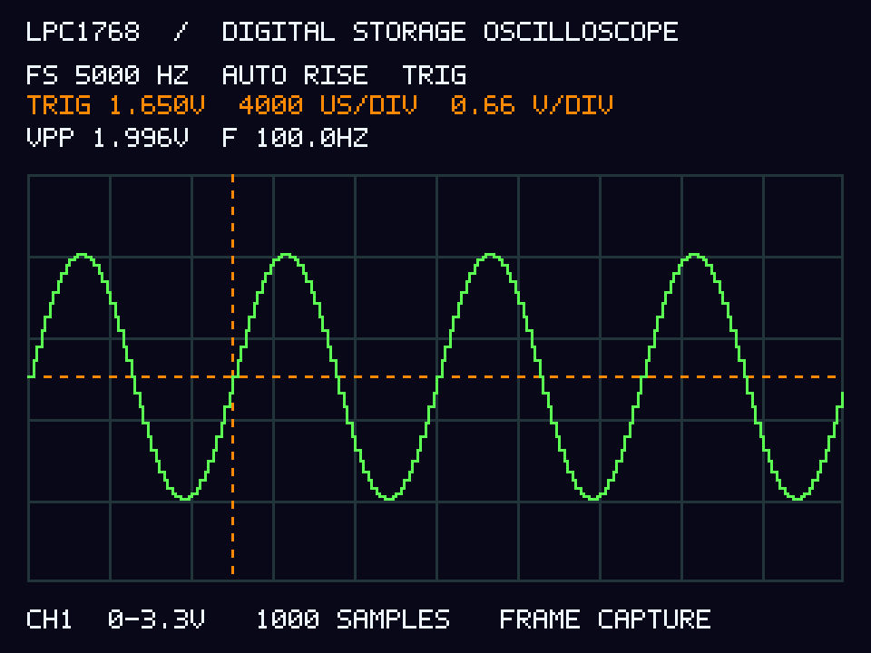

Digital Storage Oscilloscope
using LPC1768
One analogue channel. Hardware-timed capture. A standalone colour waveform display.
Reference design · 5 October 2026
The source code, host tests and simulated demonstration are supplied. ARM compilation, flashing, board-specific wiring, analogue calibration and physical testing remain to be done. No hardware performance results are claimed.
1. What you are building
The LPC1768 samples a conditioned input on P0.23 / AD0.0. A repeating Timer0 match signal starts each conversion. The ADC interrupt stores samples and detects a selected edge. Once a frame is complete, the firmware stops acquisition, calculates Vpp and an approximate frequency, and draws the result on an ILI9341 screen. It then re-arms unless the instrument is held.
The supplied main presentation calls for standalone operation, so the PC is used only for programming and for the optional browser demonstration. A 16×2 character LCD and a seven-segment display cannot render a useful full waveform. The TFT supplies that missing function.

| Parameter | Reference implementation |
|---|---|
| Default sampling | 5,000 samples/s, nominal 200 µs spacing |
| Available rates | 1 / 5 / 10 / 20 kS/s, one active channel |
| Frame | 1,000 16-bit sample words, 250 pre-trigger samples |
| Input voltage display | ADC pin voltage, nominal 0–3.3 V; no ±5 V range |
| Screen | ILI9341, 320×240 landscape, 16-bit colour over SPI |
| Memory | Two 2,000-byte waveform arrays plus small state and drawing buffers; no full-screen framebuffer |
| Initial demo signal | 100 Hz sine, 1 Vpp, +1.65 V offset, verified at the ADC input |
Each displayed frame spans approximately N/Fs: 200 ms for 1,000 samples at 5 kS/s. Rendering adds dead time. The software does not promise continuous recording, a particular refresh rate, or precision equivalent to a bench oscilloscope.
2. Parts
| Part | Qty. | Selection detail |
|---|---|---|
| LPC1768 development board | 1 | Your existing board. Confirm exposed GPIO, ADC reference, supply and programming interface in its schematic. |
| ILI9341 TFT breakout | 1 | 2.4 or 2.8 inch, 240×320 pixels, four-wire SPI, 3.3 V logic. Choose a breakout with accessible CS/DC/RST/SCK/MOSI, not a bare ribbon-connected panel or parallel-only shield. |
| Momentary push buttons | 7 | Normally open. Use individual GPIO inputs with internal pull-ups. |
| 10 kΩ potentiometer | 1 | For a safe adjustable DC input during first bring-up. |
| 1 kΩ resistor and 10 nF capacitor | 1 each | Minimum DC/known-sine test input network. This is not a sufficient anti-aliasing filter for arbitrary inputs. |
| 100 nF and 10 µF supply capacitors | As needed | Local decoupling and rail support near the analogue stage/display. |
| Wiring/prototype board | 1 set | Short SPI and analogue connections, with a shared ground. |
| Supported programmer/debugger | 1 | Use the interface your development board supports. Some boards include this. |
| MCP6002 DIP-8 | 1 optional | For the buffered two-pole input filter below. |
| 3.3 kΩ resistors / 33 nF capacitors | 2 each optional | Two approximately 1.46 kHz RC poles. |
| Schottky diodes | 2 optional | Prototype input clamps. Observe orientation and check the selected part's data sheet. |
| HD44780 16×2 LCD | 1 optional | Module explicitly suitable for 3.3 V power, logic and contrast, or add the module's required level conversion. |
| TM1637 four-digit display | 1 optional | Module supporting 3.3 V operation and decimal points. A clock module with only a colon will not show the intended decimal format. |
Do not connect a TFT backlight directly to a GPIO. Use the breakout's specified LED/backlight supply and current limiting. TFT modules with similar photographs may have different controllers or power circuits: check the actual module before buying or wiring.
3. Wiring map
| LPC1768 signal | Connection | Notes |
|---|---|---|
| P0.23 / AD0.0 | Conditioned analogue input | 0–VREFP, typically 0–3.3 V. Analog pin pull-ups disabled. |
| P0.15 / SCK0 | TFT SCK / CLK | SSP0 in SPI mode 0 |
| P0.18 / MOSI0 | TFT SDI / MOSI | Data from MCU to screen |
| P0.16 | TFT CS | Active-low GPIO chip select |
| P0.17 | TFT DC / RS | GPIO data/command. Not used as MISO. |
| P0.22 | TFT RST | GPIO reset |
| GND | TFT and signal-source ground | Common low-voltage ground |
| Module-rated supply | TFT VCC / VIN and backlight circuit | Follow the breakout's power requirements; MCU signals remain 3.3 V. |
| P1.29 / MAT0.1 | Optional external oscilloscope probe | Timing verification output; no wire is needed from this pin to the ADC. |
TFT SDO/MISO, touch-controller pins and SD-card pins are unused. Hold unused peripheral chip selects inactive as the module requires. Configure the display's mode jumpers for SPI if applicable.
| Button input | Action | Connection |
|---|---|---|
| P2.0 | RUN/HOLD; re-arm after SINGLE | One side of each button to its GPIO, other side to GND. The firmware enables pull-ups. Do not add a connection to 5 V. |
| P2.1 | Cycle sample rate | |
| P2.2 | AUTO → NORMAL → SINGLE | |
| P2.3 | Toggle rising/falling edge | |
| P2.4 | Raise trigger by 128 ADC codes | |
| P2.5 | Lower trigger by 128 ADC codes | |
| P2.6 | Cycle visible samples |
The firmware deliberately leaves P2.10 free because it participates in ISP boot selection. Keep the board's SWD/JTAG pins available for programming.
Optional displays
| Peripheral | Pin map | Enable |
|---|---|---|
| HD44780 LCD | RS=P1.18, E=P1.19, D4..D7=P1.20..P1.23, RW=GND. Wire VCC, GND, contrast and backlight for the exact module. | ENABLE_LCD 1 |
| TM1637 | CLK=P1.24, DIO=P1.25. External 4.7 kΩ pull-ups to 3.3 V. Use suitable power/level conversion if the module requires 5 V. | ENABLE_TM1637 1 |
These are disabled by default. The LCD shows sample rate and acquisition state. The TM1637 displays the sampling rate in kHz as 01.00, 05.00, 10.00 or 20.00. The module handles multiplexing; this is a different interface from a raw multi-digit LED assembly driven by Timer1.
4. Analogue input
A. First DC test
- Connect the 10 kΩ potentiometer ends to the board's 3.3 V rail and GND.
- Connect its wiper through 1 kΩ to P0.23.
- Connect 10 nF from P0.23 to GND.
- Measure the voltage at P0.23 with a multimeter before running a waveform test.
Turn the potentiometer slowly. In AUTO mode the displayed line should move vertically, Vpp should approach zero, and the frequency readout should show “--”. The input filter here is only for initial DC/known-sine tests; its cutoff is above the Nyquist frequency of the default acquisition.
B. Buffered input filter for known low-frequency signals
For the fuller prototype, use both amplifiers in an MCP6002 as voltage followers. Both stages run from 3.3 V. The input remains unipolar; this circuit does not provide a ±5 V measurement range.
| Node/component | Exact connection for MCP6002 DIP-8 |
|---|---|
| Power | Pin 8 to 3.3 V, pin 4 to GND. Place 100 nF directly between these pins and add 10 µF nearby. |
| Input node N1 | Signal input through 1 kΩ to pin 3. Optional 10 nF from N1 to GND. |
| Upper clamp | Schottky diode anode to N1, cathode to 3.3 V. |
| Lower clamp | Schottky diode anode to GND, cathode to N1. |
| U1A follower | Join pin 2 to pin 1. Pin 1 is the buffered output. |
| Filter node N2 | Pin 1 through 3.3 kΩ to N2. 33 nF from N2 to GND. N2 to pin 5. |
| U1B follower | Join pin 6 to pin 7. Pin 7 is the buffered output. |
| ADC filter node | Pin 7 through 3.3 kΩ to P0.23. 33 nF from P0.23 to GND. |
The rail clamps are limited prototype protection. They can feed current into the 3.3 V rail, especially when the board is unpowered. They do not make out-of-range or unknown inputs safe.
Each 3.3 kΩ/33 nF pole has fc = 1/(2πRC) ≈ 1.46 kHz. Ignoring the optional input capacitor, the two-pole amplitude factor is approximately 1 / (1 + (f/fc)²): about 0.995 at 100 Hz and 0.895 at 500 Hz. Vpp on the screen is the filtered ADC voltage. The firmware does not compensate for this frequency response.
This simple filter reduces high-frequency content but has limited stopband rejection. At 1 kS/s it is not a suitable general anti-alias filter. Use controlled, band-limited inputs at every rate, or redesign the filter for the selected sample rate and required rejection. A square wave contains harmonics even if its repetition rate is low.
For a future bipolar range, add a separately verified attenuator and level shifter, calibrate its offset and gain, and change the displayed conversion. Do not implement the slides' “±5 V / 3 + 1.65 V” directly: at −5 V it goes below zero and at +5 V it exceeds 3.3 V even before tolerances.
5. Build and flash
GNU Arm Embedded build
- Install an Arm bare-metal GNU toolchain providing
arm-none-eabi-gcc,arm-none-eabi-objcopyandarm-none-eabi-size. Install Make and Python 3. - Extract the project and open a terminal inside
lpc1768-dso. - Leave both optional displays disabled for initial bring-up. Leave
USE_EXTERNAL_12MHZat zero unless your board's crystal is verified. - Run the command below.
make
# On a system where the toolchain has a custom path:
make ARM_PREFIX=/path/to/bin/arm-none-eabi-The build uses its own minimal register definitions, vector table and linker script. It reserves 4 KiB of the 32 KiB local SRAM for stack headroom. The LPC1768 has additional RAM banks, but this implementation does not need them.
After a successful build, build/dso.bin and build/dso.hex include the boot-ROM vector checksum. The ELF is useful for debugging but its checksum slot is not patched by this build. A programmer that downloads the ELF must handle that checksum itself if the program is to boot independently.
Keil µVision route
- Create a C project for the exact LPC1768 device using its installed device pack.
- Use the device pack's startup code and system file. Add all files from
firmware/srcand addfirmware/includeto include paths. - Use a C99-or-newer compiler mode and a Cortex-M3 target. Disable semihosting. This firmware performs no console I/O or dynamic allocation.
- Exclude this package's
firmware/startup/startup.candlpc1768.ldin this route so you do not define two vector tables. - Configure flash at 0x00000000 (512 KiB) and local RAM at 0x10000000 (32 KiB). Use at least a 4 KiB stack in the chosen startup file.
- Select your supported debug probe and LPC1768 flash programming algorithm. Generate HEX and confirm that the programmer/device startup handles the LPC17xx vector checksum.
This Keil integration route has not been built here. It is supplied as setup guidance; the self-contained build system provided in the package is the GNU Makefile.
Programming the board
Use the board's documented SWD/JTAG interface, onboard loader, or UART ISP workflow. An SWD probe normally needs GND, target voltage reference, SWDIO and SWCLK, with reset as supported. Exact connector pins depend on the board. Write the checksum-correct BIN/HEX at flash address zero, then reset with the ISP entry pin released. Programming replaces the existing board application.
If using UART ISP, follow your board manual for boot/reset sequencing and voltage levels. A USB-to-UART adapter is not the same as a USB debugger. This firmware does not implement a USB bootloader.
6. Why the timing code differs from the slides
The LPC1768 ADC has specific hardware start sources, including MAT0.1. Setting MR0 alone does not route its match event to the ADC. This implementation uses MAT0.1 and an ADC-complete interrupt.
- Timer0 counts continuously from a peripheral clock of nominal 24 MHz by default (25 MHz with the external-clock option).
- MR1 is scheduled at fixed absolute intervals. On each match, hardware toggles MAT0.1. The short Timer0 interrupt schedules the next match using the previous match value, not the ISR entry time.
- The ADC starts on rising edges only. Therefore, Timer0 match events occur at twice the selected sample rate.
- The ADC interrupt reads one completed conversion and gives the code to the capture engine. It does not wait in a polling loop for conversion completion.
half_ticks = PCLK_HZ / (2 * sample_hz)
next_MR1 = previous_MR1 + half_ticks
Default example: 24,000,000 / (2 × 5,000) = 2,400 ticks
MAT0.1 transitions every 100 µs; rising edges recur every 200 µs.This approach avoids treating a general-purpose match register as a SysTick reload register. It also detects a scheduling deadline miss. Hardware-driven sampling avoids software-start latency variation, but oscillator tolerance, clock synchronization and real hardware behavior still matter. Do not describe the instrument as having measured “zero jitter”.
The default IRC/PLL configuration uses nominal 96 MHz to leave margin below the LPC1768's 100 MHz limit. Once you confirm a 12 MHz crystal, USE_EXTERNAL_12MHZ=1 selects a nominal 100 MHz configuration. Measure the timebase in either case. The screen does not imply laboratory frequency accuracy.
7. Using the instrument
| Control/state | Behavior |
|---|---|
| AUTO | Capture on a trigger or force one after a nominal 250 ms wait. Post-trigger capture time is additional. Useful for DC. |
| NORMAL | Wait indefinitely for a qualified edge. Keep the last trace while waiting. |
| SINGLE | Wait for an edge, complete one frame, then hold. Press RUN to re-arm. |
| Trigger | Default about 1.65 V. The signal must first move 16 codes beyond the arming side before crossing the selected threshold. This reduces noise chatter. |
| Zoom | Show 100, 200, 500 or 1,000 samples. This changes the visible window, not the ADC rate. Trigger remains at 25% of the window. |
| Rate change | Discard a partial capture and clear the previous display frame so it cannot be shown with an incorrect new timebase. |
| CLIP | At least one sample is within two codes of an ADC rail. Reduce the signal or check its offset. |
| ADC ERROR | ADC overrun or a missed Timer0 scheduling deadline. Acquisition stops. Check configuration and wiring, reduce rate, then press RUN. |
A 1,000-sample frame is stored in RAM. It is lost when power is removed. The browser's CSV export saves simulated samples only and does not retrieve data from the MCU.
8. Bring-up and acceptance tests
- Power and pin check: With the input disconnected, check board/display voltage, ground continuity, regulator capacity and the selected port mapping.
- Display-only observation: Flash the firmware and look for the title and AUTO status. A blank screen requires checking its power, backlight, controller, SPI mode, CS/DC/RST and wiring.
- DC test: Use the potentiometer circuit. Confirm three voltages with a multimeter. The trace should follow and have small Vpp.
- Timebase test: Probe P1.29 with an independent instrument. At 5 kS/s, expect rising edges nominally 200 µs apart and high/low phases nominally 100 µs each while acquiring. Pauses between bursts are expected during drawing.
- Sine test: Set a generator to 100 Hz, 1 Vpp and +1.65 V offset. Confirm the actual output with a trusted scope or meter; generator 50 Ω/Hi-Z settings can change amplitude.
- Trigger test: Try rising/falling, an unreachable trigger level in NORMAL, then SINGLE and RUN to re-arm.
- Rate and zoom: Change each independently. Compare the displayed waveform against a trusted scope at the ADC input.
- Long run: Check for unintended resets, corruption or ADC ERROR. Add optional displays only after the base scope works.
| Test | Expected behavior / proposed target | Your measured result |
|---|---|---|
| ADC DC conversion | Monotonic readings at approximately 0.5, 1.65 and 2.8 V; record offset and gain error. | ________________ |
| 5 kS/s timebase | Nominal 200 µs rising-edge interval during acquisition; record mean and variation. | ________________ |
| 100 Hz sine | Stable trace. Aim for ≤2% frequency/Vpp error after calibration, measured at ADC input. | ________________ |
| NORMAL, unreachable level | No false new capture; previous frame remains. | ________________ |
| SINGLE | One complete frame, then frozen until re-armed. | ________________ |
| All rates | No observed ADC ERROR at the tested rate; independently verify actual timing. | ________________ |
| Five-minute run | No reset, buffer corruption or unexpected stopped acquisition. | ________________ |
The error target above is a proposed acceptance criterion, not a result. At high signal frequencies, sample density and analogue filtering can prevent it being met. Record the test conditions and report failures honestly.
Calibration
Measure VREFP relative to VREFN and update REFERENCE_UV in config.h. For example, 3.287 V becomes 3287000. Rebuild. The code uses endpoint scaling code × Vref / 4095; the ideal quantization bin width is Vref / 4096. ADC resolution is not the same as voltage accuracy. Offset/gain correction beyond reference scaling is not implemented.
The frequency estimator averages threshold-crossing periods within a frame. It requires at least two rising crossings and enough signal amplitude. It is not a spectral analyser and can be unreliable for noisy, clipped, aliased or irregular signals.
9. Corrections to carry into your presentation
| Existing claim | Use instead |
|---|---|
| “5 kHz sampling reconstructs 1–10 kHz signals perfectly” | At 5 kS/s, Nyquist is 2.5 kHz; a 1 kHz signal has only five samples/cycle. Demonstrate initially at 100 Hz. |
| “Measured 200.02 µs”, “<0.8% error”, “zero jitter” | Remove until independently measured. Use the lab table to collect real evidence. |
| “MR0 directly triggers the ADC” | The implementation uses the ADC's supported MAT0.1 source, with scheduled MR1 toggles. |
| “32 KiB total RAM” | LPC1768 has 64 KiB total SRAM split across banks. The provided linker uses 32 KiB local SRAM. |
| “LCD and 7-segment show the waveform” | ILI9341 renders the waveform. Character LCD and seven-segment modules provide optional status. |
| “10.6 kHz filter prevents aliasing at 5 kS/s” | A cutoff above Nyquist does not do that. State the actual filter and its limited rejection. |
| “Any LM358/TL072 works on 3.3 V” | Check supply and input/output headroom. The optional reference circuit uses a suitable low-voltage rail-to-rail MCP6002. |
| “Continuous acquisition” | Capture, hold, render, re-arm. There is dead time between frames. |
| “Fully complete and tested system” | Source and host validation are complete. Board tests and calibration remain pending. |
10. Evidence and source references
The uploaded decks and scanned PDF supplied the project scope. The standalone requirement in MAIN_PPT_WITH_VISUALS and the 12-slide LPC1768 decks takes precedence here over older PC-telemetry versions. The earlier V-DSO repository was a conceptual reference only. This package contains an independent C implementation and does not import its LabVIEW files.
- NXP LPC1768 product information: device class and memory/peripheral capabilities.
- NXP UM10360, LPC17xx user manual (manufacturer document hosted by Keil): clocking chapter 4, Timer0 chapter 21, ADC chapter 29, boot/ISP chapter 32. Verify against the revision applicable to your board/device.
- ILI Technology ILI9341 controller data sheet: commands and serial interface.
- Adafruit SPI breakout wiring guide: example of module-specific SPI configuration; generic modules may differ.
- Microchip MCP6002 product page and data sheet: optional buffer selection and electrical limits.
Filter values, software architecture, pin assignment and acceptance targets are reference-design choices, not requirements certified by those manufacturers.